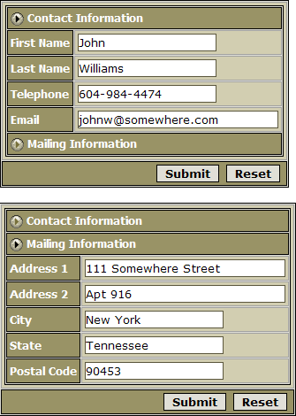
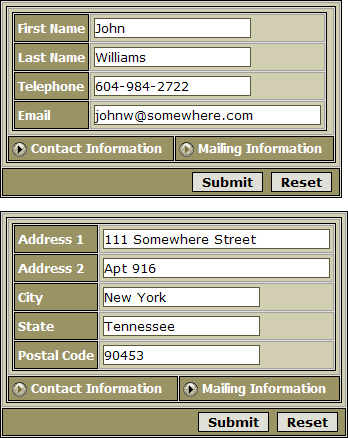
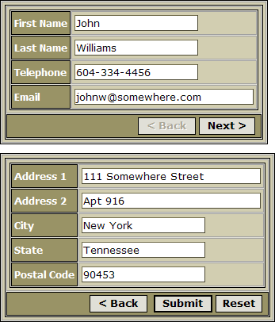
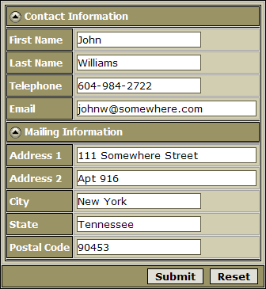

Creating Tab Controls on a Dialog Component
Dialog components, grid components with columnar formats, and grid detail view parts may use tabs to divide content between multiple "pages". The following dialog places Contact and Mailing information on two pages using the Single Band style.

The two panes of the tab control at different moments. The SingleBand Style allows you to directly open any pane, one at a time. When one tab pane expands, all other tab panes collapse.
The Tab style allows users to directly access any pane. The pane labels (at bottom), which display the panes, can also be at the top.

The two panes of the tab control at different moments. The Tab Style allows you to directly open any pane, one at a time. The tab pane buttons can be either at the top or the bottom of the tab control
Another style of tabbing is know as "Genie Style". The user uses the < Back and Next > buttons to view different tabs.

The two panes of the tab control at different moments. The Genie Style forces you to access tab panes sequentially, from first to last.
The Bands style is similar to the Single Band style, except that all panes may also be close or open at the same time.

The Bands style allows the user to display or collapse all panes at the same time.
To define tabs on a dialog component:
Display the Form Controls page.
Click Insert Layout Command... , which appears below the Control Types list.
Select "[Tab Control]" and click OK.
In the Control Types list position the [Tab Control] entry above all controls that it will contain.
Click Insert Layout Command... , select "[Tab Pane]" and click OK.
Position the [Tab Pane].1 entry below the [Tab Control].1 but above all controls that it will contain.
Click Insert Layout Command... , select "[Tab Pane]" and click OK.
Position the [Tab Pane].2 entry below the controls of [Tab Pane].1 but above all controls that it will contain.
Repeat steps 7 and 8 for additional tab panes.
Select the [Tab Control] object in the Select Controls list.
Click
 to display the HTML Layout dialog.
to display the HTML Layout dialog.In the Type field select "Tabs", "Genie", "Bands", or "SingleBands".
Setting Tab Style Tab Control Properties
If you chose "Tabs" in step 12:
Select whether to place the tab controls on the "Top" or "Bottom" in the Tab Settings > Align field.
Optionally, in the Tab Settings > Inline Style field clickto display the <span class=Screen>Style Editor</span>. Here you can define HTML settings that will override the selected style sheet.
Optionally, set the width of the tab control in the Sizing > Width field. Otherwise, the size of the control will change as its contents change. The tab control will be left aligned within its frame.
Optionally, set the height of the tab control in the Sizing > Height field. The tab control will be vertically centered within its frame.
|
Type |
Options and Description |
| Type | Defines the style of the tab control. The options are:
|
|
Tab Settings |
Options and Description |
| Title | Specifies the placement of the tab labels. The options are:
|
| Inline Style | Overrides the style that is applied by the current style sheet. with tmpl.field_info[N] .TabLayout.inlineStyle as C |
|
Sizing |
Options and Description |
| Width | Sets the width of the table cell that contains the tab control. with tmpl.field_info[N] .TabLayout.width as C |
| Height | Sets the height of the table cell that contains the tab control. with tmpl.field_info[N] .TabLayout.height as C |
Setting Genie Style Tab Control Properties
If you chose "Genie" in step 12:
Select whether the control will have a title.
Optionally, in the Genie Settings > Inline Style field click to display the <span class=Screen>Style Editor</span>. Here you can define HTML settings that will override the selected style sheet.
Optionally, change the tile of the "Previous" button in the Genie Settings > Previous button label field.
Optionally, change the tile of the "Next" button in the Genie Settings > Next button label field.
Optionally, set the width of the tab control in the Sizing > Width field. Otherwise, the size of the control will change as its contents change. The tab control will be left aligned within its frame.
Optionally, enable the progress bar in the Genie Settings > Progress Bar field. This device gives you a graphical view of which tab in the sequence of tabs that you are viewing.
If you enable the progress bar, additional properties will appear.
Select the progress bar style.
Optionally, change the size and style of the progress bar cells that represent unvisited panes.
Optionally, change the size and style of the progress bar cells that represent visited panes.
Optionally, set the height of the tab control in the Sizing > Height field. The tab control will be vertically centered within its frame.
|
Type |
Options and Description |
| Type | Defines the style of the tab control. The options are:
|
|
Genie Settings |
Options and Description |
| Title | Specifies whether the tab control will have a title. with tmpl.field_info[N] .TabLayout.title as L |
| Inline Style | Overrides the style that is applied by the current style sheet. with tmpl.field_info[N] .TabLayout.inlineStyle as C |
| Previous button label | Defines the label of the Previous button. with tmpl.field_info[N] .TabLayout.prev_label as C |
| Next button label | Defines the label of the Next button. with tmpl.field_info[N] .TabLayout.next_label as C |
| Progress bar | Overrides the style that is applied by the current style sheet. with tmpl.field_info[N] .TabLayout.progress as L |
|
Genie Progress Bar |
Options and Description |
| Type | This property only appears if Genie Settings
> Progress Bar is checked. Defines the style of the progress
bar, which shows which tab is active. The options are:
|
| Container Style | This property only appears if Genie Settings > Progress Bar is checked. Defines the style of the background of the progress bar. with tmpl.field_info[N] .TabLayout.progressBarStyle as C |
| Marker On Style | This property only appears if Genie Settings > Progress Bar is checked. Sets the size and style of the progress bar cell that represents a not yet visited tab pane. with tmpl.field_info[N] .TabLayout.progressMarkerOnStyle as C |
| Marker Off Style | This property only appears if Genie Settings > Progress Bar is checked. Sets the size and style of the progress bar cell that represents a visited tab pane. with tmpl.field_info[N] .TabLayout.progressMarkerOffStyle as C |
|
Sizing |
Options and Description |
| Width | Sets the width of the table cell that contains the tab control. with tmpl.field_info[N] .TabLayout.width as C |
| Height | Sets the height of the table cell that contains the tab control. with tmpl.field_info[N] .TabLayout.height as C |
Setting Bands Style Tab Control Properties
If you chose "Bands" or "SingleBands" in step 12:
Select whether to display tab separators in the Bands Settings > Separator field.
Optionally, set the width of the tab control in the Sizing > Width field. Otherwise, the size of the control will change as its contents change. The tab control will be left aligned within its frame.
|
Type |
Options and Description |
|
Type |
Defines the style of the tab control. The options are:
with tmpl.field_info[N] .TabLayout.LayoutType as C |
|
Sizing |
Options and Description |
|
Width |
Sets the width of the table cell that contains the tab control. with tmpl.field_info[N] .TabLayout.width as C |
See Also
Limitations
Web publishing applications only.